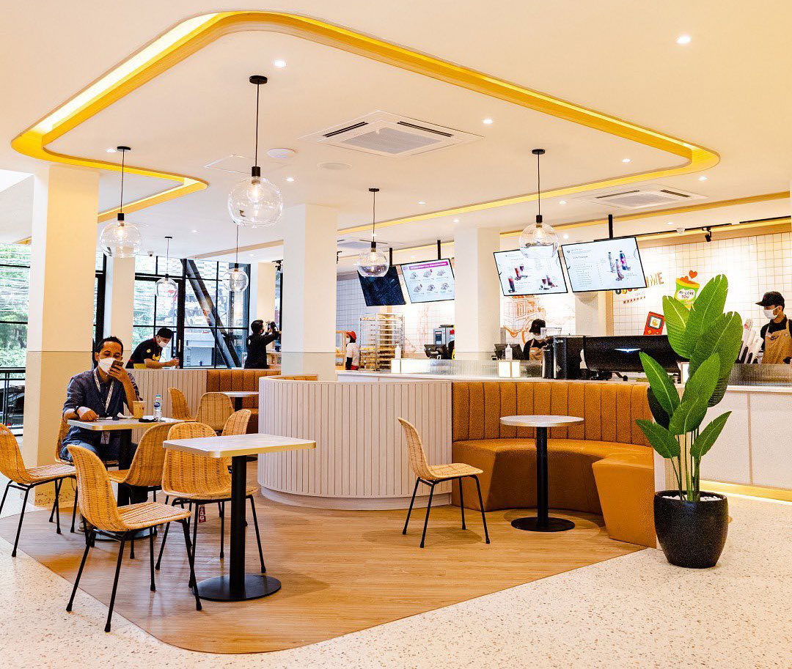
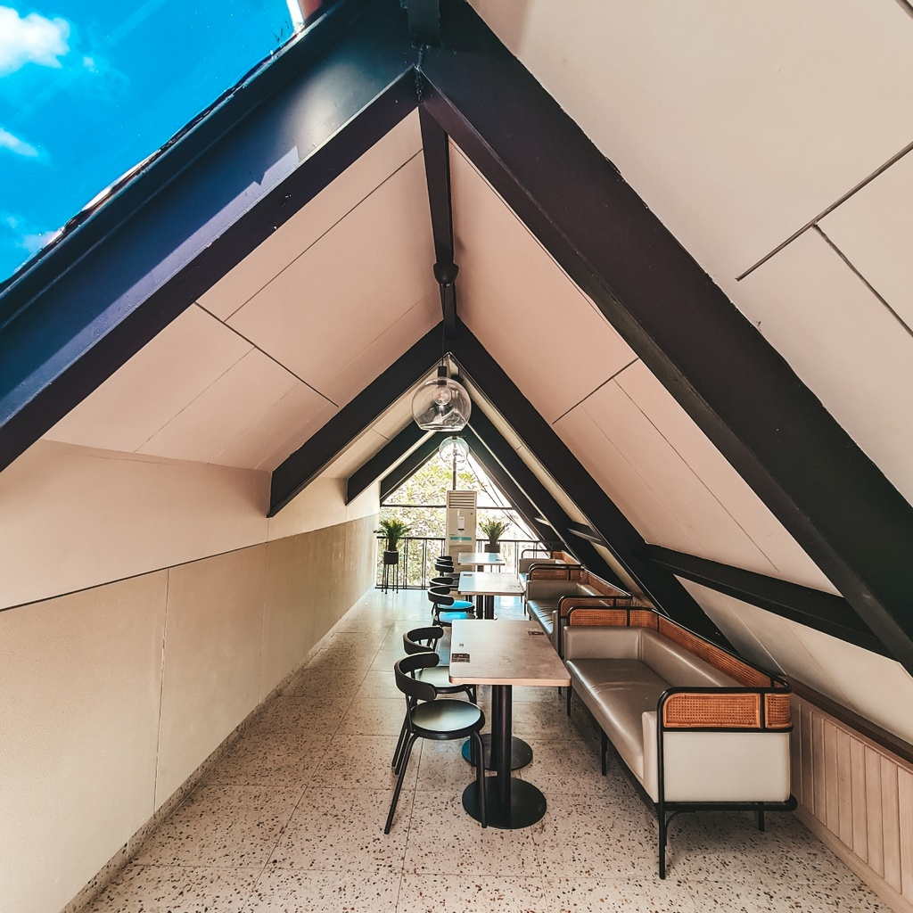
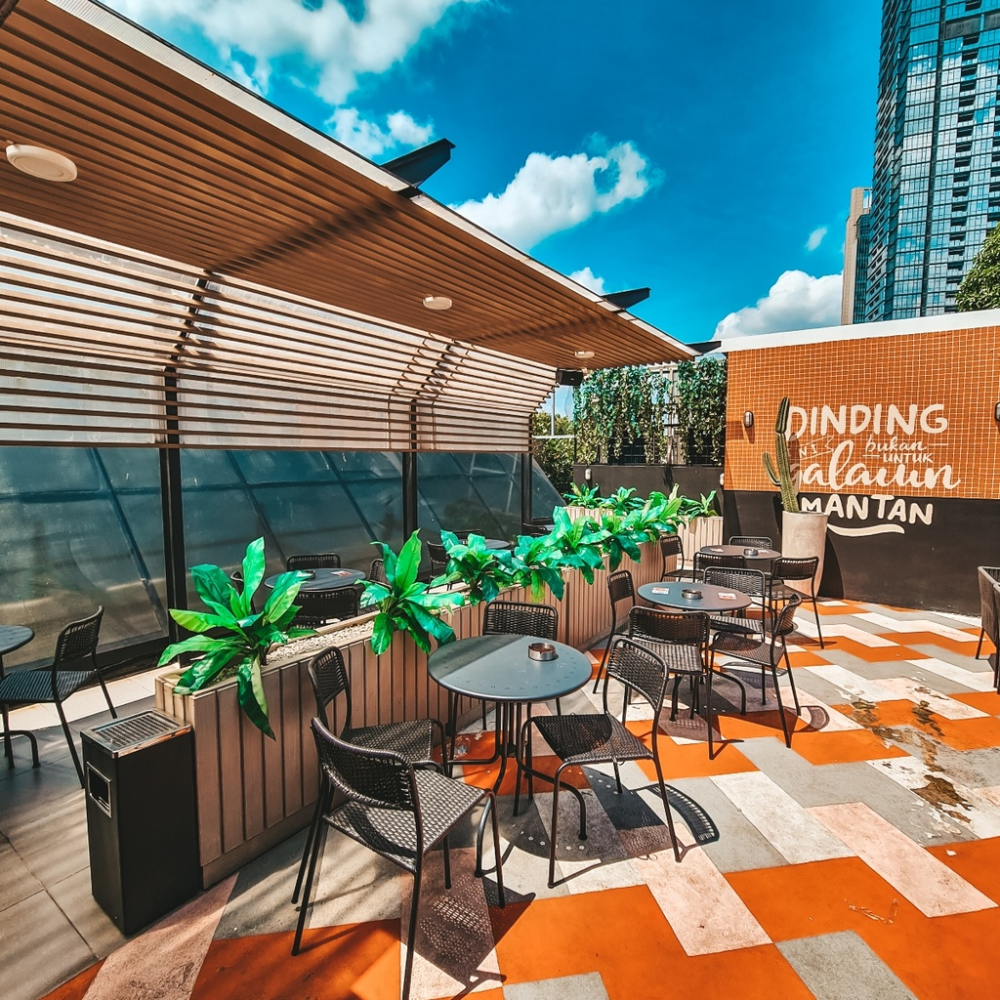

Yasmine Rizky Ardana - 11210251000052

Rumah kenangan di desain unik dan instagrameable
menjadi tren populer.
Kenangan Group meresmikan kafe dine-in pertamanya, yaitu Rumah Kenangan sebagai salah satu strategi bisnis sekaligus penguatan
komitmen di industri Food and Beverage (F&B) tanah air. Mengambil lokasi strategis di bilangan Senopati, Jakarta Selatan,
yang merupakan salah satu area bisnis dan perkantoran utama di Jakarta, Rumah Kenangan diharapkan bisa menjadi rumah
untuk
memanjakan para konsumen dari semua kalangan.
Seiring berjalannya waktu Pengunjung Rumah Kenangan dapat menikmati berbagai pilihan menu dari brand naungan Kenangan Group, yaitu minuman berkualitas baik
kopi maupun non-kopi dari Kopi Kenangan, roti selembut awan dengan berbagai pilihan rasa dari Cerita Roti, serta makanan berat
berupa juicy crispy boneless chicken thigh dan dori dengan beragam pilihan saus serta sambal dari Chigo.
 
KOPI KENANGAN
Didirikan pada 2017 dengan brand utamanya yaitu Kopi Kenangan. Kopi Kenangan adalah salah satu jaringan kopi grab-and-go
dengan pertumbuhan tercepat di Indonesia. Menu andalannya yaitu Kopi Kenangan Mantan.
CERITA ROTI
Cerita Roti merupakan salah satu langkah awal Kopi Kenangan untuk memperluas jangkauannya dalam membawakan minuman serta
makanan berkualitas kepada konsumen. Cerita Roti membawa konsep roti jaman dahulu atau jadul yang dapat dinikmati beragam generasi.
CHIGO
Chigo didirikan oleh para pendiri Kopi Kenangan, yang juga terinspirasi oleh beberapa fenomena kombinasi makanan dan minuman
yang tidak biasa namun menjadi favorit para foodies. Bagian paha ayam tanpa tulang juga dengan sengaja dipilih Chigo sebagai menu
andalannya, guna tetap memberikan sensasi empuk dan lembut di setiap gigitan.
Untuk selengkapnya, klik disini!